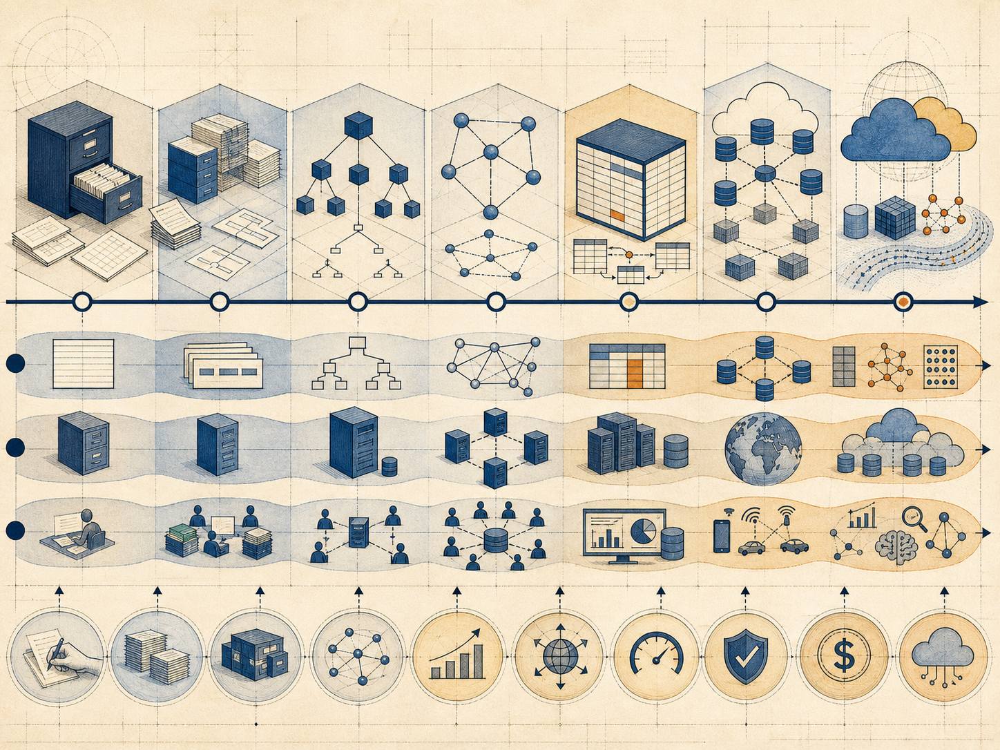

应用需求
存取、事务与分析负载不断扩展到 OLTP、OLAP、HTAP 和海量并发
应用需求、数据模型和计算机技术共同推动数据库演进
 VER. 2608.3
Built with impress.js
VER. 2608.3
Built with impress.js
数据库历史可以从问题、模型和系统技术的演进来理解
以零部件管理为例，采购文件和库存文件分别维护同一项信息
采购文件和库存文件各自保存零部件信息
同一项共享事实需要在多个文件中维护
一处更新而另一处未改，两个文件出现不一致
数据库统一组织共享事实并控制更新
数据库把共享事实统一管理，并用约束、事务和恢复机制降低人工同步失效的风险
同一项数据库技术通常同时回应应用负载、数据模型和计算机技术的变化

存取、事务与分析负载不断扩展到 OLTP、OLAP、HTAP 和海量并发
从层次／网状发展到关系，再扩展到复杂和多模型数据
硬件、网络、并行、内存和云平台扩大数据库系统的可行边界
层次／网状模型集中组织数据与联系，却把物理存取路径带进用户的访问方式
| 方面 | 第一代系统提供什么 | 仍然存在的边界 |
|---|---|---|
| 数据模型 | 层次／网状结构集中描述数据与联系 | 结构与联系紧密绑定访问路径 |
| 模式结构 | DBTG 三级模式和映像 | 提供一定的数据与程序独立性 |
| 操作方式 | 定义语言与导航式操纵语言 | 检索仍要沿预设存取路径 |
| 系统意义 | IMS、IDS 把数据管理从应用逻辑中分离 | 数据中心化不等于完全隐藏物理路径 |
第一代系统解决了文件分散和共享管理问题，但路径依赖成为关系模型要解决的新痛点
同一项零部件查询不再要求用户沿文件路径检索，系统负责选择执行方案
路径由设计者或管理员维护；优化器只在已有路径中比较和选路，不负责创建索引
理论、语言、系统和产业共同支撑关系数据库普及
关系模型与关系代数提供可推理、可组合的基础，使数据与查询获得统一解释
SQL 提供共同接口，使应用表达目标并获得系统间互操作基础
优化、事务、并发控制和恢复把抽象模型变成高效且可靠的执行
标准、产品、工具和性能基准与测试降低开发、迁移和采用成本
这些扩展分别回应分析、复杂数据和多模型负载
数据库演进通过模型和系统的扩展组合回应新需求
应用各自维护文件，重复存储带来冗余和更新不一致；第一代集中管理数据但仍依赖导航路径
关系模型与 SQL 表达目标，优化和事务技术负责可执行与正确
分析、复杂数据和新模型推动系统继续扩展，而不是简单替代基础能力
零部件案例显示：文件冗余促成集中管理，路径依赖推动关系模型，分析与复杂数据又推动后续扩展